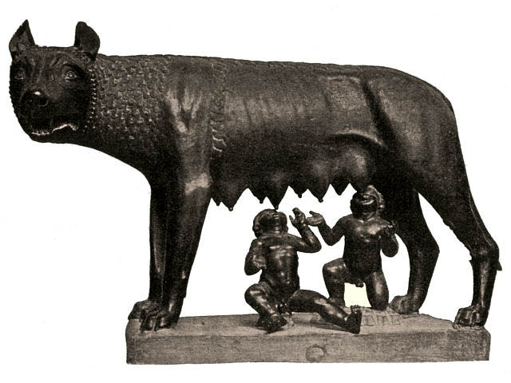

Царский период (753 – 509 гг. до н.э.)
По легенде Рим был основан братьями Ромулом и Ремом, первый из который стал римским царем. По преданию вслед за Ромулом Римом правили еще 6 царей:
- Нума Помпилий,
- Тулл Гостилий,
- Анк Марций,
- Тарквиний Приск,
- Сервий Туллий,
- Тарквиний Гордый.

В царский период все полноправное население Рима ‒ «римский народ» (populus romanus) ‒ делилось на 300 родов, 10 курий (по 30 родов) и 3 трибы (по 10 курий). Высшим органом государственного управления было народное собрание (комиции), в котором могли участвовать все полноправные жители общины. Первоначально к полноправному населению относились только патриции – потомки коренных жителей Рима, плебеи – потомки переселившихся в Рим родов - не имели права участвовать в комициях. Еще одним органом управления был совет старейшин – глав 300 родов – сенат (от лат. – senex (старик)).
Римская Республика (509 ‒ 30 гг. до н. э.)
В 509 году до н.э. римляне изгнали царя Тарквиния Гордого. Это событие стало причиной возникновения Римской республики. Отныне Римом правили магистраты, избираемые из патрициев. Период характеризуется развитием производства и изменениями в некоторых общественных группах. Двигателями прогресса стали победоносные войны, позволяющие расширить границы государства.
Римская республика просуществовала почти 500 лет. Можно выделить два периода: первый относится к V–III вв. до н. э., второй – к II–I вв. до н. э.
Ранняя республика. Активные социальные преобразования, освоение новых территорий, успешные завоевания. Граждане подвергаются делению на пять имущественных классов. Ввоз большого количества рабов.
Поздняя республика. Отличительные черты: неосуществленные реформы, кризисные явления, политические разногласия. Продолжались военные действия. Рабовладельцы богатели. Военные активно влияли на городскую жизнь, в 82 г. до н.э. верховный военноначальник временно сверг правительство и установил диктатуру. Это было серьезным ударом по государственным устоям.
Кризис Римской Республики
В Италии стапливаются сотни тысяч рабов, регулярными становятся восстания невольников. Так, в 138 г. до н.э. восстали рабы Сицилии. Восставшие взяли под контроль весь остров и даже попытались создать свое государство. Только в 132 г. до н.э. римская армия смогла подавить это движение. В 104‒99 гг. до н.э. проходило не менее масштабное II Сицилийское восстание рабов. В 74 г. до н.э. произошло крупнейшее в истории древности восстание рабов под руководством Спартака. Лишь благодаря чрезвычайному напряжению сил Римской Республики восстание было подавлено в 71 г. до н.э.
На фоне роста социально-экономических противоречий ярко проявляется кризис римской цивитас. Республиканские политические институты, сформировавшиеся как органы власти небольшой сельской общины не были способны эффективно управлять колоссальными территориями, вошедшими в состав Римского государства. Так, провинции фактически передавались в полное распоряжение назначаемых сенатом наместников, разорявших провинции бесконечными и, по сути, бесконтрольными поборами. В провинциях постоянно вспыхивали мятежи против господства Рима.
Эпоха Гражданских войн.
Последнее столетие существования Римской Республики представляло собой беспрестанную борьбу различных слоев Римского общества, периодически переходящую в гражданскую войну. К концу II в. до н.э. в Риме окончательно сложились две противоборствующие партии: оптиматы (сторонники сохранения власти нобилитета) и популяры (выступавшие за необходимость реформ).
В 70‒60 гг. до н.э. происходит возвышение Гнея Помпея Великого. Он участвовал в подавлении восстания Спартака, прославился в войне с Митридатом, своими походами в Переднюю Азию и Закавказье, борьбой со средиземноморскими пиратами. В 60 г. до н.э. Помпей вместе с олигархом Марком Крассом и аристократом Гаем Юлием Цезарем образовал политический союз (I Триумвират), члены которого опираясь на армию, разделили между собой власть над провинциями.
Угроза усиления Цезаря заставила Помпея пойти на сговор с сенатом и приказать Цезарю распустить армию и явиться в Рим на суд. Цезарь не подчинился и перейдя границу Италии – р. Рубикон, фактически объявил сенату войну. В ходе гражданской войны (49 – 45 гг. до н.э.) Цезарь одержал ряд побед над Помпеем и его сторонниками в Греции, Северной Африке и Испании. В 45 он был провозглашен «отцом отечества» и пожизненным диктатором, фактически неограниченным правителем Республики. Все более открыто монархический характер власти Цезаря вызывал недовольство аристократической оппозиции. 15 марта 44 г. до н.э Цезарь был убит группой заговорщиков во главе с Брутом и Кассием.
Смерть Цезаря привела к возобновлению гражданских войн. Против сторонников Республики выступили цезарианцы: сподвижник Юлия Цезаря - Марк Антоний и внучатый племянник Цезаря Октавиан, которые, в свою очередь, также конкурировали за наследство диктатора. В 43 г. до н.э. Антоний, Октавиан и примкнувший к ним Лепид заключили союз (II триумвират). Триумвиры жестко расправились с оппозицией, после чего выступили против республиканцев. В битве при Филиппах (42 г. до н.э.) республиканская армия была разгромлена, ее лидеры Брут и Кассий покончили жизнь самоубийством. После победы над республиканцами началась борьба между триумвирами Октавианом и Антонием, которого поддерживал Птолемеевский Египет. Война между ними закончилась победой флота Октавиана в битве у мыса Акций в 31 г. до н.э. и присоединением Египта к Риму.
В 30 г. до н.э. Октавиан стал единоличным правителем, а в 27 г. до н.э. подобострастный сенат преподнес ему титул «Август» (Священный). Государство, формально не устранив республиканских институтов, по сути, стало монархией – Римской империей.